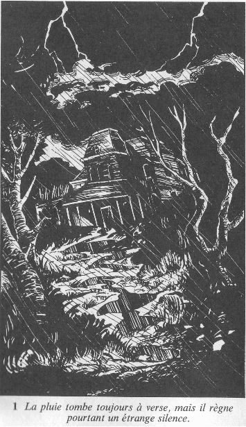
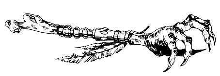
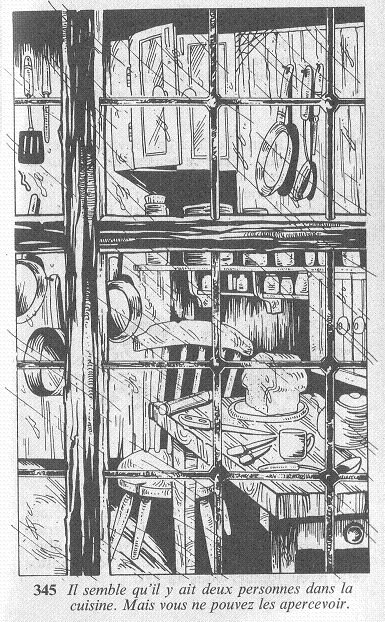
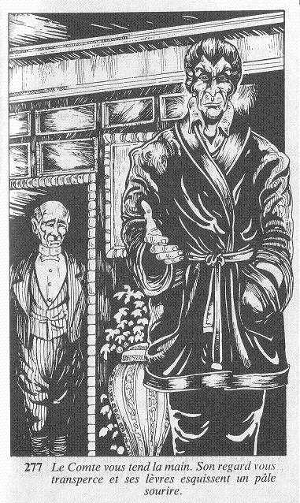
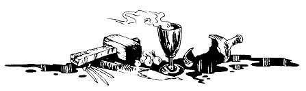

Vous grimpez les marches quatre à quatre et, arrivé devant la porte du Manoir, vous vous arrêtez un instant pour reprendre votre souffle. Bien que vous ayez couru tout le long du chemin, la pluie a transpercé vos vêtements, et vos pieds sont complètement trempés. A en juger par le nombre de flaques d'eau dans lesquelles vous avez pataugé, il en coûterait une véritable fortune pour remettre l'allée en état. Maintenant à l'abri du porche, vous secouez vos vêtements imbibés d'eau. La pluie tombe toujours à verse, mais il règne pourtant un étrange silence.
Aucune lumière ne brille au rez-de-chaussée, et vous faites quelques pas en arrière pour essayer d'apercevoir la fenêtre qui avait attiré votre attention : les fenêtres du premier étage sont plongées dans l'obscurité ; la lumière que vous aviez vue a disparu. L'endroit semble complètement désert. C'est alors que vous prenez conscience de l'heure : il est minuit moins cinq et tous les habitants de la maison dorment probablement. Une chouette hulule dans le lointain et un frisson vous parcourt l'échine. Vous commencez à éprouver quelque frayeur de la situation dans laquelle vous vous trouvez : égaré en pleine campagne, sur le seuil d'une vieille maison à moitié en ruine, et à l'allure inquiétante, et, sur le point de réveiller quiconque peut l'habiter... à minuit! Vous ne serez certainement pas accueilli à bras ouverts, mais si vous tenez à être présent à votre rendez-vous, demain matin, vous n'avez pas le choix : vous devez trouver un téléphone pour demander de l'aide.
Alors que vous vous tournez vers la porte d'entrée, vous remarquez une lueur sourde provenant du côté gauche du Manoir : une lampe vient d'être allumée. Quelqu'un est donc éveillé, et vous poussez un soupir de soulagement. Au milieu de la porte est fixé un marteau sculpté, et un cordon de sonnette pend à votre droite. Allez-vous frapper à l'aide du marteau (FRAPPER), tirer le cordon de sonnette (TIRER), ou préférez-vous vous diriger vers la lumière en contournant le Manoir (CONTOURNER))?
Au bout de quelques instants, la porte s'ouvre lentement. Sur le seuil se tient un homme de haute taille, vêtu d'un habit de couleur noire. Son long visage est empreint d'une solennité glacée. « Oui ? » dit-il d'un ton légèrement indigné. Vous souriez nerveusement, et vous lui expliquez la situation peu agréable qui est la vôtre. L'homme demeure impassible : « Entrez, dit-il, le Maître vous attend. Suivez-moi. » Il vous précède alors jusqu'à un vaste hall, et il vous prie de vous asseoir pendant qu'il avertit son Maître de votre arrivée. Rendez-vous ici .
Vous saisissez le cordon de sonnette, et vous le tirez. Venant des profondeurs du Manoir, vous percevez un léger tintement, et la lumière que vous aviez aperçue sur votre gauche disparaît. Rendez-vous ici .
Vous descendez l'escalier, et vous contournez le Manoir sur la gauche. Effectivement, une lumière brille, provenant très certainement d'une fenêtre située sur l'arrière du bâtiment. Vous pouvez vous diriger vers cette fenêtre pour y jeter un coup d'œil (COUP D'OEIL), ou vous pouvez examiner les fenêtres situées sur le flanc de la maison pour voir s'il vous serait possible d'y pénétrer sans éveiller l'attention de ses habitants (EXAMINER).
Vous vous installez dans un lourd fauteuil sculpté, et vous examinez les lieux. La salle dans laquelle vous vous trouvez est bien différente de ce que l'aspect extérieur du manoir vous avait fait imaginer. Elle est en effet décorée avec goût de riches tapisseries et d'élégants lambris de chêne, et est meublée d'une robuste table ainsi que de fauteuils datant certainement du XVIe siècle. De plus, de nombreux portraits sont accrochés aux murs. Allez-vous attendre l'arrivée de votre hôte (ATTENDRE), vous intéresser aux portraits (S'INTERESSER), ou vous mettre à la recherche d'un téléphone (RECHERCHER)?
Vous marchez jusqu'à une grande fenêtre qui paraît mal fermée. De toute façon, même si vous aviez pu l'ouvrir, il vous aurait été impossible de vous glisser à travers ses barreaux. Cette maison semble être particulièrement à l'abri des intrus ! Maintenant, allez-vous faire le tour du Manoir, pour voir d'où provient la lumière (FAIRE LE TOUR), ou préférez-vous revenir à la porte d'entrée pour tirer le cordon de sonnette (TIRER), ou frapper à l'aide du marteau (FRAPPER) ?
La fenêtre éclairée est proche d'une petite porte donnant sur une cuisine. Des voix proviennent de l'intérieur de la pièce, mais vous ne pouvez apercevoir les interlocuteurs qui doivent se tenir contre le mur, hors de votre champ de vision.
Vous tendez l'oreille pour essayer de saisir quelques mots de la conversation. Il semble qu'il y ait deux personnes dans la cuisine, et elles parlent avec excitation : « ... Le Maître est prêt, et je commence à être impatient, car c'est la première fois que je participe à cela. Etes-vous vraiment sûr qu'il va venir ? » Une autre voix d'homme répond plus calmement : « Cette affaire m'inquiète. Elle est si jeune ! De plus, elle est arrivée ici en toute innocence. Je ne sais vraiment pas... » Les deux hommes font quelques pas dans la cuisine, et vous pouvez enfin les voir. Tous deux sont vêtus de toges blanches, et l'un est beaucoup plus jeune que l'autre. Qu'allez-vous faire : allez-vous frapper à la porte en espérant qu'ils vous laisseront entrer (FRAPPER), ou préférez-vous rester caché pour essayer d'en apprendre davantage (SE CACHER) ?
Le jeune homme se tourne vers son compagnon et dit avec colère : « L'enseignement du Maître n'est pas pour les mauviettes. Vous savez comme son pouvoir est grand, et les promesses qu'ils nous a faites. Peut-être n'êtes-vous pas suffisamment fort pour rester parmi nous ! » Le vieil homme tourne alors la tête vers la fenêtre ; sans doute pour cacher l'expression de peur qui apparaît sur son visage. « Non, balbutie-t-il, tout ira bien. Ce n'était qu'un moment de faiblesse. Allons terminer les préparatifs. » Après avoir soufflé les bougies, les deux hommes quittent la pièce, et vous vous demandez de quoi ils pouvaient bien parler ! Maintenant, vous pouvez essayer de pénétrer dans la cuisine (PENETRER), ou vous pouvez revenir à la porte d'entrée pour y frapper (FRAPPER).
« Qu'est-ce que c'est ?, marmonne le vieil homme. Qui peut bien frapper à la porte à une heure pareille ? Serait-ce l'un des Frères ? Je croyais pourtant que tout le monde était arrivé... » Les deux hommes chuchotent alors entre eux, et leur voix est trop faible pour que vous puissiez comprendre quoi que ce soit. Vous attendez patiemment sous la pluie. Finalement la porte s'ouvre et une voix demande : « Qui est là ? » Allez-vous les mettre au courant de votre mésaventure et leur demander la permission de téléphoner (TELEPHONER), ou allez-vous prétendre que vous êtes l'un des Frères auxquels ils ont fait allusion (MENTIR) ?
Il n'y a pas de téléphone dans le hall, et vous hésitez à vous aventurer à l'intérieur du Manoir. Pendant que vous réfléchissez à la meilleure attitude à adopter, vous entendez un bruit provenant de l'autre côté de l'une des portes de la salle, et vous regagnez vite votre fauteuil. Rendez-vous ici .
Trois portraits attirent plus particulièrement votre attention. Allez-vous vous intéresser à une jeune femme d'aspect agréable, portant une tiare (JEUNE FEMME), à un homme corpulent d'âge moyen et portant des lorgnons (HOMME CORPULENT), ou à une femme âgée aux cheveux gris et à l'expression sévère (FEMME ÂGEE)?
Il n'y a pas de téléphone dans le hall, et vous hésitez à vous aventurer à l'intérieur du Manoir. Pendant que vous réfléchissez à la meilleure attitude à adopter, vous entendez un bruit provenant de l'autre côté de l'une des portes de la salle, et vous regagnez vite votre fauteuil. Rendez-vous ici .
Vous entendez soudain un bruit de pas et l'homme vêtu de sombre réapparaît précédant un personnage de haute taille portant une veste d'intérieur pourpre. « Permettez-moi de vous présenter Lord Kelnor, Comte de Brume », dit-il. Le Comte vous tend la main. Son regard vous transperce et ses lèvres esquissent un pâle sourire.
A peine avez-vous commencé à lui raconter votre mésaventure qu'il vous interrompt d'un signe de la main. « Je vous en prie, dit-il. Je vois que vous avez été pris dans cette épouvantable tempête ; allons nous installer devant un bon feu, et voyons comment nous pouvons vous venir en aide. » Puis, se tournant vers son majordome, il ajoute : « Franklin, dites au cuisinier de préparer quelque chose de chaud pour notre visiteur. » Vous protestez en lui disant que vous ne voulez le déranger en aucune façon, mais, sans vous prêter la moindre attention, il vous conduit jusqu'à un salon où brûle un feu de bois. Vous vous débarrassez de votre manteau, et vous vous installez confortablement dans un fauteuil. Bientôt la chaleur du feu commence à chasser vos sombres pensées. D'autant plus que Franklin est vite de retour, portant un plateau sur lequel sont posés deux verres de cognac. Allez-vous vous détendre en dégustant le cognac, puis demander à votre hôte la permission d'utiliser le téléphone (TELEPHONE), ou préférez-vous attendre qu'il vous questionne (ATTENDRE) ?
La porte est verrouillée. Impossible de pénétrer dans le Manoir par cette voie. Si vous le désirez, vous pouvez frapper à la porte pour essayer d'attirer l'attention des deux hommes qui l'occupaient. Tentez votre Chance. Si vous êtes chanceux, ils vous entendent, et reviennent sur leurs pas, cliquez ici. Si vous êtes Malchanceux, ils se sont déjà trop éloignés, et il vous faut trouver un autre moyen pour entrer. Si vous ne voulez pas frapper à la porte, ou si vous avez été Malchanceux, vous revenez à la porte d'entrée principale où vous pouvez soit tirer le cordon de sonnette (TIRER), soit frapper à l'aide du marteau (FRAPPER)
Le feu et le cognac vous réchauffent et vous commencez à vous sentir plus à l'aise. Vous pouvez déduire 1 point de votre total de PEUR (si ce total est supérieur à zéro). Vous expliquez au Comte ce qui vous est arrivé sur la route, et vous lui demandez la permission de téléphoner au garage le plus proche. « J'ai bien peur que notre ligne téléphonique n'ait souffert de la tempête, vous répond-il. Elle sera réparée demain dans la matinée. Quoi qu'il en soit, le garagiste ne se déplacerait certainement pas à cette heure. Mais ne vous inquiétez pas. Vous êtes tout à fait le bienvenu, et vous pouvez passer la nuit ici. Demain, Franklin vous conduira à la ville. Justement, le voici. » Le majordome entre, en effet, et vous annonce que le repas est servi. Vous vous levez tous deux et vous vous dirigez vers la salle à manger. Rendez-vous ici .
Une plaquette fixée sous le tableau vous indique que vous vous tenez devant le Duc de Brewster (1763-1828). Un personnage d'une élégance raffinée ! Mais soudain vous faites un bond en arrière : vous pourriez jurer que les yeux du Duc ont bougé ! Très vite, vous avez la confirmation de votre doute : les yeux du portrait bougent, et cherchent à attirer votre attention sur l'une des portes du hall. Mais que vous arrive-t-il ? Votre voiture tombe en panne en pleine campagne, puis vous vous retrouvez dans une maison à moitié abandonnée et pourtant luxueuse, dont les tableaux s'animent... Allez-vous regagner votre fauteuil en attendant l'arrivée du Comte (REGAGNER LE FAUTEIL), ou allez-vous vous diriger vers la porte que vous a indiquée le portrait (SE DIRIGER) ? Mais vous pouvez également vous intéresser à un autre portrait (AUTRE PORTRAIT)
La porte s'ouvre en grand, et vous êtes invité à pénétrer dans la cuisine. « Nous pensions que tout le monde était déjà là, dit le vieil homme, et il était grand temps que vous arriviez, car les autres... » En voyant votre expression, il s'arrête de parler, et échange un regard avec son compagnon. « Euh, hum... qu'est-ce qui vous a retardé ? » Vous vous sentez mal à l'aise, et vous marmonnez une vague excuse à propos de votre voiture qui est tombée en panne. « Votre voiture, dit lentement l'homme ; oui, bien sûr, votre voiture. Quel ennui ! J'espère que ce n'est pas trop grave. » Leur réaction vous fait penser que vous ne leur avez pas donné l'explication qu'ils attendaient de vous. Et soudain vous réalisez qu'il n'y avait aucun véhicule devant le Manoir ; et pourtant, selon votre interlocuteur, tout le monde est là ! Pendant que vous réfléchissez rapidement à ce que vous pourriez leur dire, vous ne remarquez pas le manège du jeune homme qui s'est glissé derrière vous, et vous ressentez une violente douleur derrière le crâne, qui vous fait perdre connaissance. Vous perdez 4 points d'ENDURANCE et, si vous êtes toujours vivant, rendez-vous ici .
Vous ouvrez les yeux. La tête vous tourne encore et vous mettez quelque temps avant de réaliser que vous êtes pieds et poings liés. La pièce dans laquelle vous vous trouvez est vide, mais déjà vous avez un plan. Vous allez sautiller jusqu'à la fenêtre, briser la vitre, et frotter vos liens sur le tranchant d'un éclat de verre afin de vous libérer. Avec difficulté, vous vous mettez sur vos pieds et, par petits bonds maladroits, vous arrivez jusqu'à la fenêtre. Au-dehors, le vent pousse des rafales de pluie contre les vitres. Allez-vous essayer de les fracasser avec vos mains - mais c'est là une entreprise risquée - ou préférez-vous tenter votre Chance ? Dans le premier cas, rendez-vous ici . Si vous préférez tenter votre Chance, rendez-vous ici .
Vous frappez à la porte avec force, et regardez par la fenêtre. Les deux hommes reviennent bientôt, et allument les bougies. Le vieil homme se dirige vers la porte , rendez-vous ici.
La porte s'ouvre en grand, et le vieil homme vous regarde d'un air interrogateur avant de vous laisser entrer. Les deux hommes vous écoutent alors pendant que vous leur racontez ce qui vous est arrivé. « C'est vraiment de la malchance, dit le vieil homme, mais probablement Franklin pourra-t-il vous aider. Allez le chercher Frère Fabien. » Le jeune homme lance un regard furieux à son compagnon, mais quitte néanmoins la cuisine. Vous posez alors quelques questions à votre hôte pour essayer de savoir où vous vous trouvez, et si lui-même et le Frère Fabien sont membres d'une secte quelconque. « En quelque sorte, répond-il. En fait, votre arrivée est un peu embarrassante, car cette nuit... » Il vous regarde alors avec nervosité « car cette nuit... » Il est interrompu par l'arrivée du Frère Fabien, accompagné d'un homme de haute taille vêtu d'un habit sombre : Franklin, très certainement, à qui vous expliquez la raison de votre présence. Il vous écoute sans qu'un pli de son visage ne bouge, et vous déclare d'un ton impassible lorsque vous avez terminé votre récit : « Les étrangers ne sont pas les bienvenus ici. Mais je vais vous conduire auprès du Maître qui décidera s'il peut vous venir en aide. Veuillez me suivre. » Précédé de Franklin, vous traversez la cuisine, et vous suivez un couloir qui finit par déboucher sur un vaste hall d'entrée. « Attendez ici pendant que je préviens le Comte », vous ordonne-t-il avant de disparaître. Rendez-vous ici .
Avez-vous été Chanceux ou Malchanceux ? Si vous avez été Chanceux, vous vous êtes libéré sans vous blesser. Mais si vous avez été Malchanceux, vous vous êtes cruellement coupé, et vous perdez 2 points d'ENDURANCE. Rendez-vous ici 
Vous coupez vos liens, et vous massez vos poignets qui sont complètement engourdis. Puis, vous vous dirigez vers la porte pour tenter de l'ouvrir : elle n'est pas verrouillée ! Vous l'entrouvez alors légèrement, et vous jetez un coup d'œil à l'extérieur. La pièce dans laquelle vous vous trouvez donne sur un balcon, situé au premier étage du Manoir, qui est bordé par une balustrade, à travers les barreaux de laquelle vous pouvez apercevoir le hall d'entrée. A votre gauche, deux portes sont situées dans le coin de ce balcon, qui se poursuit après avoir tourné sur la droite. Si vous voulez vous diriger dans cette direction, rendez-vous ici . En tournant votre regard vers la droite, vous remarquez que le balcon longe une autre porte, avant de tourner sur la gauche. Si vous préférez prendre ce chemin, rendez-vous ici .
Vous vous dirigez vers les deux portes situées dans le coin du balcon. Sur la porte qui se trouve à votre gauche est inscrit le nom Balthus. Quant à la porte qui vous fait face, elle ne porte aucun nom. Si vous désirez pénétrer dans la pièce Balthus, cliquez ici . Si vous préférez entrer dans l'autre pièce, rendez-vous ici . Mais vous voulez continuer votre chemin le long du balcon, rendez-vous plutôt ici.
La porte s'ouvre sur un étroit passage, qui se termine par une fenêtre. A mi-chemin, dans le mur de gauche, vous apercevez une porte : la porte Diabolique. Si vous désirez pénétrer dans cette pièce, rendez-vous ici . Si vous préférez vous diriger vers la fenêtre pour l'examiner, rendez-vous ici . Mais vous pouvez aussi revenir sur le balcon, et continuer à le suivre, dans ce cas, rendez-vous plutôt ici .
Vous pénétrez dans la pièce, et vous refermez la porte derrière vous. En constatant que vous êtes seul, vous poussez un soupir de soulagement, et vous vous adossez contre la porte pour reprendre votre souffle. Allez-vous en profiter pour vous reposer un peu (SE REPOSER), ou allez-vous vous diriger vers la fenêtre qui vous fait face, dans l'espoir de trouver un moyen de vous échapper (ESSAYER DE S'ECHAPPER)
Vous poursuivez votre chemin, et vous parvenez à l'escalier principal qui descend au rez de-chaussée. Face à l'escalier se trouve une porte sur laquelle aucun nom n'est inscrit. Si vous voulez prendre l'escalier pour gagner le rez-de-chaussée, rendez-vous ici . Mais vous pouvez également vous diriger vers la porte (VERS PORTE), ou poursuivre votre chemin le long du balcon (VERS BALCON).
Vous pénétrez à l'intérieur de ce qui semble être une petite resserre, et vous refermez la porte derrière vous. Des étagères sont disposées sur les murs de droite et de gauche, sur lesquelles différents objets d'usage domestique sont rangés. Face à vous, vous apercevez une porte. Qu'allez-vous faire? Allez-vous examiner les objets posés sur les étagères (EXAMINER), vous diriger vers la porte (VERS PORTE), ou regagner le balcon (VERS BALCON) ?